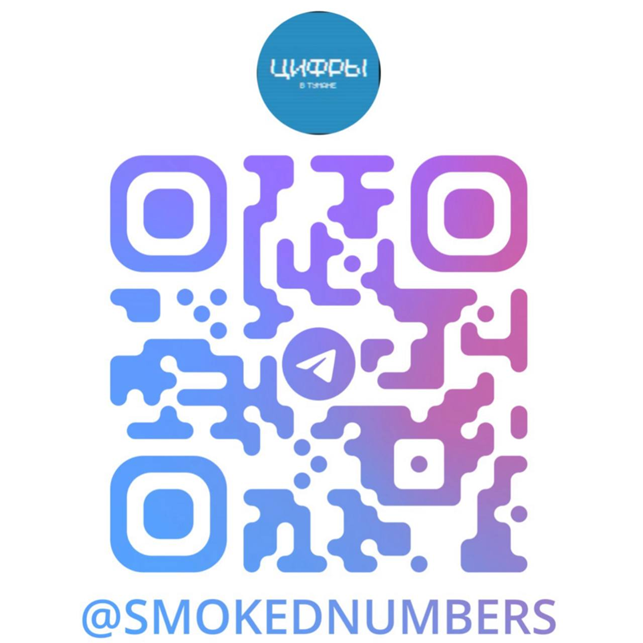

Исследование влияния цифровых технологий на современное и будущее образование
Основной целью нашего проекта «Цифры в тумане: Грань науки и общества» является всестороннее освещение изменений, происходящих в системе образования под влиянием цифровых технологий, как в настоящем, так и в перспективе. Мы стремимся не только проанализировать текущие тренды и инновации, но и продемонстрировать, как эти изменения могут быть применены наиболее полезным и эффективным способом для всех участников образовательного процесса.
Наш сериал о цифровом образовании --- это шаг к осмыслению и внедрению современных технологий в учебный процесс. Мы не только информируем, но и вдохновляем зрителей на участие в образовательной трансформации. Пилотный эпизод и последующие выпуски станут площадкой для обсуждения ключевых тем: искусственного интеллекта, цифровой грамотности и дистанционного обучения. Активное взаимодействие с аудиторией и создание образовательных материалов помогут сформировать сообщество единомышленников, готовых внедрять инновации. Мы верим, что это пространство станет ценным ресурсом для преподавателей, студентов и родителей. Наш проект призван сделать цифровое образование доступным и понятным, формируя ключевые навыки для успешной жизни в 21 веке.
Присоединяйтесь к нашей группе в ВКонтакте и Телеграм чтобы узнавать о новостях нашего проекта самыми первыми!